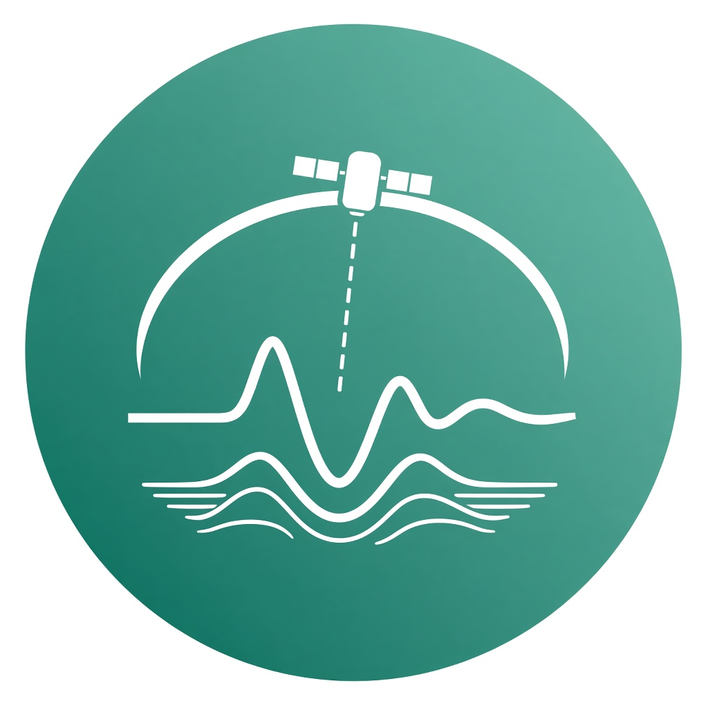
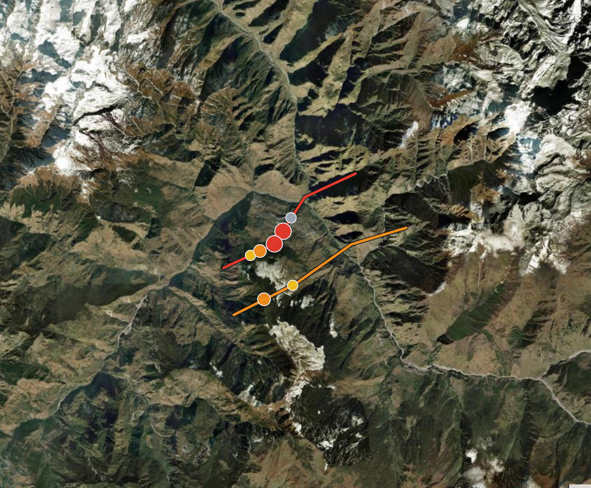
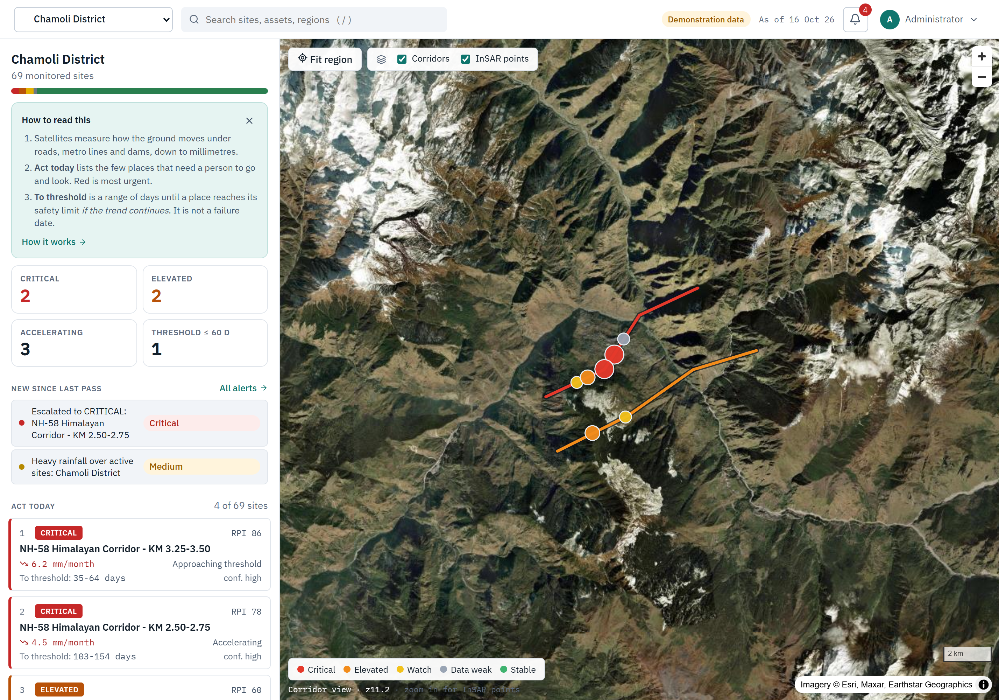
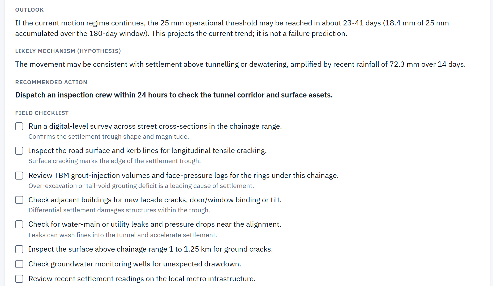
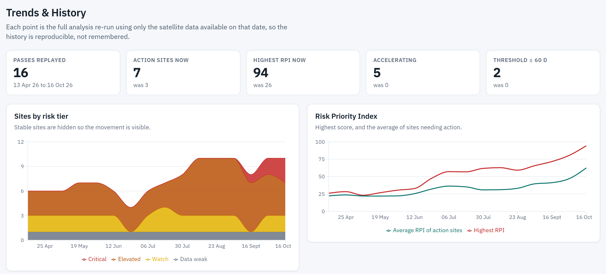
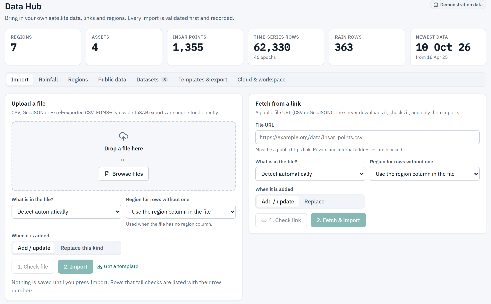
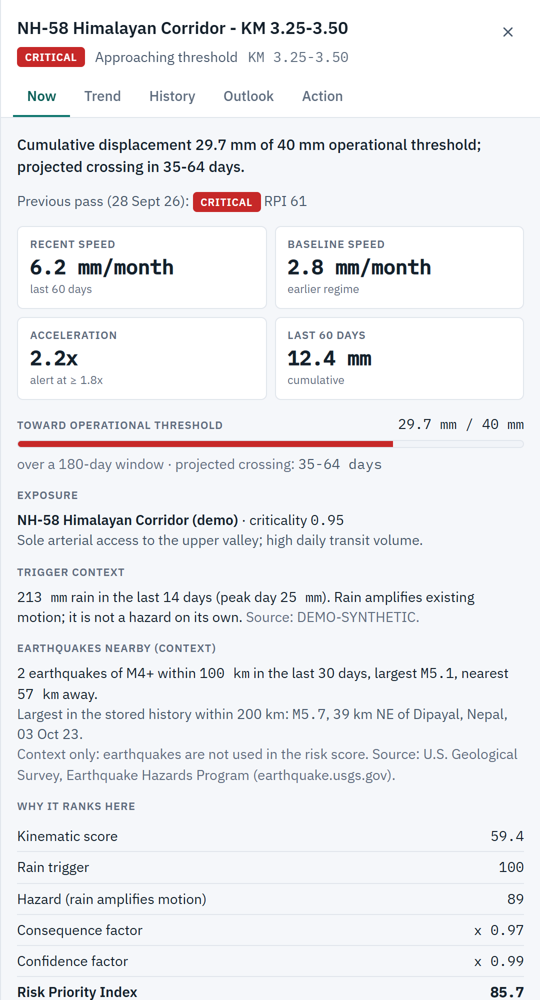
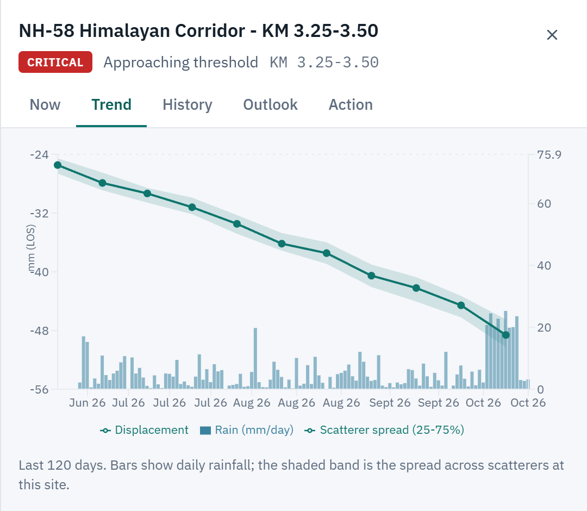
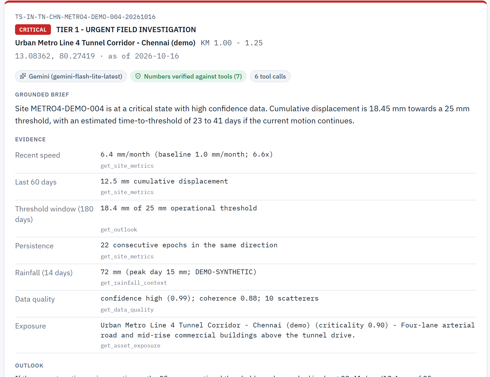

Roads, metro tunnels and dams can sink or slide by a few millimetres for months before anything visible happens. TerraSentinel reads those satellite measurements after every pass, ranks the places that need a person, and uses Gemini on Google Cloud to write an inspection ticket an engineer can act on today.

Moving 6.2 mm a month, twice as fast as before. Threshold window 35–64 days if this trend continues. Not a failure date.
“Dispatch an inspection crew within 24 hours…” · numbers verified against tools
Sole access to the upper valley. One slope slip cuts off towns, pilgrims and supply trucks.
Settlement above the tunnel drive, under roads and buildings. Tight tolerances, dense exposure.
Crest settlement and toe movement with severe downstream consequence.
After this satellite pass, which 250 m segment needs an engineer, why, and how soon?
| Today’s option | Why it fails the decision |
|---|---|
| Raw InSAR portal | Thousands of moving points per pass, with no link to assets, no consequence and no “who goes today”. |
| Rainfall alarm | Treats the trigger as the hazard, so it fires over stable ground and buries real creep. |
| Generic AI chatbot | Writes fluent risk text but invents millimetres and failure dates. Nothing to audit. |
| Scheduled walk-over | The calendar ignores which segment is accelerating right now. |
ESA’s Sentinel-1 radar measures how much the ground moved since last time, to the millimetre, even through cloud and at night.
1,355 radar points are matched to the highway, tunnel or dam they sit on and cut into 87 short sections of 250 m.

Fast, speeding up, on an important road, with good data? It goes to the top. Rain alone never raises the alarm.

It reasons over the facts from its tools, summarises what is happening, and creates the inspection ticket. Every number is checked before anyone sees it.

The engineer works the checklist and records the action. The next pass shows whether the ground calmed down or got worse.
Problems are found while they are still small, so roads, trains and water supplies are more likely to stay open.
A short list instead of thousands of dots, and a ticket that says what to check, where, and why.
Crews and money go where risk is rising. Every decision can be traced back to the satellite data behind it.
A pass leaves 1,355 moving points. The engine decides which few matter, and Gemini tells the engineer what to inspect.
Data Hub validates every file and link
GIS join of points to assets, daily history
tested risk engine scores every site
investigates with tools, writes the work order
map, Act today list, ticket, audit trail
Function calling with 7 read-only tools: metrics, history, outlook, rain, earthquakes, exposure and data quality. The first round must use tools.
Plain-language summary, likely cause (stated as a hypothesis), recommended action with urgency, and a site-specific field checklist.
Every number must match a tool result. Failure-date and certainty language is rejected. On any failure, a labelled template is shown instead.
Temperature 0.1 and a time budget. Model fallback from gemini-flash-latest to lighter models on 429 or 5xx errors.
Live proof: a Gemini ticket drafted during development made 6 tool calls and had 7 numbers verified against them. Its recommendation: “Dispatch an inspection crew within 24 hours to check the tunnel corridor and surface assets.”
| Vertex AI | Gemini for production, through the project’s own credentials (ADC). AI Studio key for development. Gemini live today. |
| BigQuery | 9 tables, partitioned by date and clustered; ST_DWITHIN spatial join; views for today’s act list and tier history; a cost cap on every query. Built, one flag to switch on. |
| Cloud Run | One container serves the app, API, engine and agent over HTTPS, and scales to zero. Container ready, public URL next. |
| IAM · ADC | Service-account access with no key files, which also satisfies org policies that block key creation. |
“NH-58 KM 3.25–3.50 · RPI 86 · CRITICAL.” They still have to dig through charts to work out why, what to check and how soon.
What is happening, the likely cause, what to do and by when, and a field checklist for that exact site, in plain language.
No invented numbers and no promised failure dates. Each ticket carries the tool calls behind it, so anyone can see where every number came from.
| Source | Where it comes from | How we connect | Role in the score |
|---|---|---|---|
| InSAR points + time series | Sentinel-1, processed into persistent scatterers by the owner’s InSAR provider | Data Hub upload or HTTPS link · CSV, long or wide (EGMS style) | core measurement |
| Rainfall | Open-Meteo forecast and archive APIs (no key), or owner gauges | fetch_rain at each region centre · CSV upload | amplifier only, capped at +50% |
| Assets | Owner GIS: line, type, criticality 0–1, consequence, buffer | GeoJSON LineString / MultiLineString | consequence |
| Earthquakes | USGS feeds (M2.5+ 30 d) and FDSN (M5+ 5 y), public domain | public_catalog via the safe fetcher, cached CSV | context, never scored |
| Regions · basemap | Country → state → district hierarchy · Esri World Imagery | JSON / CSV · MapLibre raster tiles allow-listed in the CSP | scope and display |
https only; resolves the host and refuses private and metadata IPs; checks every redirect; size cap and timeout
detects kind and layout; plain-language report; bad rows listed; unsupported formats refused
local files or bigquery tables; provenance row for every dataset
Each job sets maximum_bytes_billed. BigQuery uses Google Cloud credentials (ADC); the Gemini key is never a BigQuery credential.

Data Hub · validate first, then importHow fast is it moving, and is it speeding up?
| Recent speed | slope over the last 60 days, mm/month |
| Baseline | slope from 270 to 90 days ago |
| Acceleration | |recent| ÷ max(|baseline|, 0.5) |
| Persistence | steps in the same direction, smoothed |
| Seasonal | a big swing that mostly recovers |
| Site series | median of the points in each 250 m section |
Capped at 0.30 for low coherence or fewer than 3 points, so weak data can never be CRITICAL.
Moving × important × trustworthy
speed = |recent| ÷ 5·creep · accel = (ratio−1) ÷ 3 · progress = window ÷ threshold · all clipped 0–1
| CRITICAL | near the limit, or speeding up on an important asset with heavy rain |
| ELEVATED | speeding up, or steady creep on an important asset |
| WATCH | seasonal, or creep on a lesser asset |
If nothing changes, how long until the limit?
| Asset | Demo limit | Creep |
|---|---|---|
| Highway | 40 mm / 180 d | 2.0 mm/mo |
| Metro | 25 mm / 180 d | 1.5 mm/mo |
| Dam | 30 mm / 180 d | 1.0 mm/mo |
Always a band, never a date. The 0.4 / 0.3 / 0.3 weights, the rain cap and these limits are demo defaults. The asset owner replaces them with their own standard. Assumes the trend continues.
As observed → RPI 86 CRITICAL
Minor road (0.3) → 57 ELEVATED
Poor radar data → ≤ 15 WEAK
Heavy rain, stable → ≈ 1 STABLE

| Step | Calculation | Result |
|---|---|---|
| Inputs | 6.2 vs 2.8 mm/mo · 2.2× · 29.7/40 mm · 213 mm rain · crit 0.95 · conf 0.97 | |
| Kinematic | 100 × (.4·0.62 + .3·0.40 + .3·0.74) | 59.4 |
| Hazard | 59.4 × (1 + 0.5 × 1.0) · rain capped | 89.1 |
| RPI | 89.1 × 0.975 × 0.985 | 85.7 |
| Tier | threshold approach · crit ≥ 0.5 | CRITICAL |
| Outlook | 51 d constant · 44 d accelerating · widened · not a failure date | 35–64 d |


Live ticket · 6 tool calls · 7 numbers verifiedmust call tools
investigate
write JSON
pass or template
“…an estimated time-to-threshold of 23 to 41 days if the current motion continues.”
passed: quoted from the live ticket, values from get_outlook
“…the tunnel will fail in 21 days.”
rejected: unknown number and failure language
Resilience: the model chain falls back from gemini-flash-latest on 429 or 5xx errors. This ticket came from flash-lite. Any failure still ships a labelled template.
Cloud Run · HTTPS · CSP and HSTS · rate limits · session cookie
React 19 · MapLibre satellite map · React Query · role-aware screens
FastAPI · RBAC viewer / analyst / admin · CSRF · SSRF-safe fetch · audit log
numpy · pandas · shapely · metrics, RPI, tiers, bands, alerts, pass replay
Gemini · tool loop · number guard · model fallback · AI Studio or Vertex AI
BigQuery (GEOGRAPHY, partitions, snapshots) or local · USGS store · provenance
validate
BigQuery
engine
history
UI + Gemini
349 backend tests · security controls · UI on a running server · live USGS fetch · live Gemini work order
Cloud Run URL · BigQuery on a real project · partner InSAR · OIDC / IAP sign-in · field validation study
Every ranked site comes with its formula, its data and its limits.
Buyer: the asset-integrity or geotechnical team at a highway, metro, dam or mine. They buy a shorter list: 1,355 points become 7 sites. The same rank, explain and inspect loop fits any linear asset.
Ask: review the live demo, the 3-minute video and the repository.
Team Agent Ram · Ramasamy P
browser · role
service account via ADC · no key files
Which 250 metres should an engineer inspect today? The engine ranks them. Gemini writes the ticket, and every number is checked.
Asset-integrity and geotechnical teams at highway, metro, dam and mine operators.
Engineer attention. 1,355 radar points become 7 sites to review.
Same loop on any linear asset: rank, explain, inspect, record, next pass. Ask: review the live demo, the 3-minute video and the repository.
Google Cloud AI Builder Cup 2026 · JAPAC · Sustainability